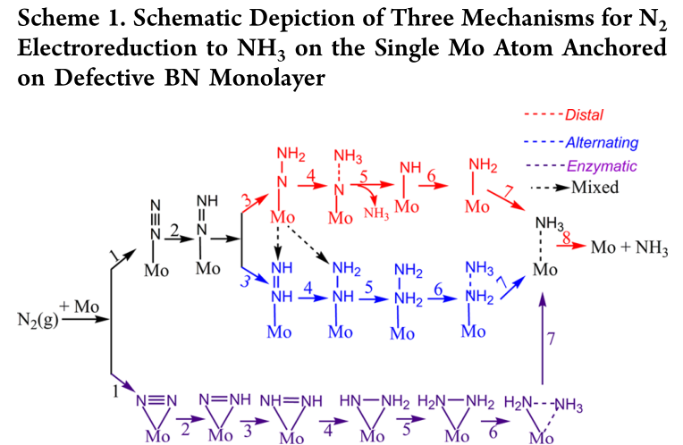
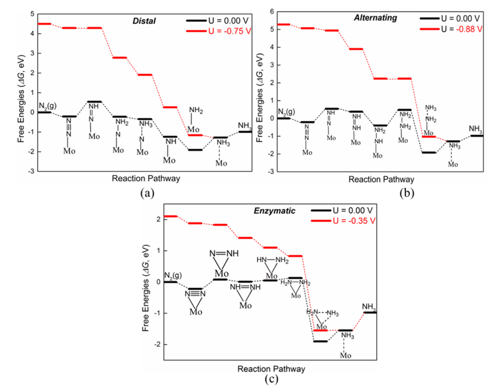

100年前开发的Haber-Bosch工艺仍在工业中用于NH3的合成，但此方法需要高温、高压，反应过程中使用的氢气主要来自天然气的蒸汽重组，这大大增加了温室气体的排放。此外，NH3产率相当低，转化率通常低于15％。将N2电化学还原为NH3是一种潜在的合成途径，可以通过太阳能或风能提供动力，实现可持续的能源经济。然而，电化学氮还原存在两个主要问题：（1）过电位高（2）法拉第效率（FE）低（由于副反应氢析出反应（HER）的发生，尤其在水溶液中）。目前用于N2还原制备NH3所报道的催化剂（Au、Pt/C、Ru、Mo、Ag/Au、Bi4V2O/CeO2、Rh和Fe/CNT）种类有限。而且，大多数催化剂的反应动力学缓慢、催化性能低。因此设计具有较好选择性且高效的电催化剂，在低过电位下实现高FE和NH3合成速率具有重要意义。 (From材料牛By微观世界)
氮气是地球大气中含量最多的气体，占总体积的78.09%。分子氮（N2）中存在的氮氮三键是最强的化学键之一，这也意味着将N2转化为其他含氮化合物并非易事。大自然中存在多种固氮微生物，这些微生物利用固氮酶催化N2还原为NH3，进而转化为含氮有机物。目前已知的固氮酶均含有过渡金属（铁、钼、钒）活性中心。另一类固氮方法是我们熟知的人工固氮。早在20世纪初期，由于人类对氮肥需求的日渐增大，如何高效固氮成为了当时全世界的难题。德国科学家Fritz Haber在实验室发现过渡金属锇、铀催化剂可以在高温高压的条件下将N2和H2的混合物转化为NH3。随后该技术被德国化工巨头企业BASF购买，在科学家Carl Bosch的领导下，最终利用铁催化剂高效合成NH3。这项技术被称为哈伯法（Haber-Bosch process），一直沿用至今。(From X一MOL By chemliu )
过渡金属元素一般具有部分占据的d电子，金属中心中空的d轨道可以接收N2中的孤对电子，占据的d电子又可以反馈至氮气的反键轨道。这种“推拉”式的作用，导致成百上千的过渡金属化合物可以和N2结合（图1，左）。其次，过渡金属的前线轨道之间能量差距较小（4 eV左右），很容易和N2的轨道进行有效重叠。过渡金属中心还具有很强的多电子还原活性。不过，这些特点是大部分s区或p区的主族元素所不具备的。那么非金属元素有没有可能参与固氮呢？近日，德国维尔茨堡大学（JMU）的Holger Braunschweig教授研究组发表在Science 上的研究结果首次给出了肯定的答案，他们发现一价硼宾（borylene）化合物可以结合N2并对其进行还原（图1，右）。这项工作第一作者为Marc-André Légaré博士，值得一提的是，这篇是Légaré博士近几年来作为第一作者在硼化学研究领域发表的第二篇Science 文章（另一篇DOI: 10.1126/science.aab3591）。(From X一MOL By chemliu )
The fundamental thermodynamic relation states that G^0=H^0-TS At constant pressure and ambient temperature, the enthalpy can be described as term of H^0 and the heat capacity, C_p : H=H^0+\int{C_P}dT Moreover, the entropy term can be presented to the sum of the translational, rotational, vibrational, and electronic contributions as to: S=S_t+S_r+S_{\nu}+S_e In the above equation, the approximations entropy can be expressed:
a. At the fundamental electronic level: S_e = 0.
b. For gases, translational, rotational, and vibrational entropy terms have contributions that might not be neglected: S=S_t+S_r+S_{\nu}.
c. For solids and adsorbates, both S_t=0 and S_r=0, and thus: S=S_{\nu}.
d. Because \int{C_P}dT is almost negligible and \Delta\int{C_P}dT=0, no thermal corrections for the enthalpy have been taken into the following calculate for Gibbs free energies (\Delta{G}).
And also, intrinsic zero point energy (ZPE) and extrinsic dispersion (D) corrections can be obtained by the above analytical: G=H^0+\int{C_P}dT-T(S_t+S_r+S_{\nu}+S_e)+ZPE+D The neighboring intermediates can be named as 1 and 2, thus we can gain the Gibbs free energy of neighboring intermediates reaction: \Delta{G}_{21}=G_2-G_1 Such as: in the reaction (N_2^*\rightarrow{N}_2H^*), the Gibbs free energy \Delta{G}=G({N}_2H^*)-G(N_2^*)-G(H^+/e^-) In such equation, the chemical potential of the H^+/e^- pair has the half value of the chemical potential of the dihydrogen molecule, under the standard hydrogen electrode conditions, the G(H^+/e^-) equal to \frac{1}{2}G(H_2).
At present, there are three typical ammonia synthesis methods: the Haber–Bosch process,6 biological nitrogen fixation,7,8 and electro/photo-electro chemical synthesis.9,10 In the Haber–Bosch process, the bonds in N2 and H2 are often broken before reduction and passed over Fe or Mo-based catalysts to form ammonia.11 As we know, the whole process is exothermic, but a significant energy input is required to achieve an acceptable reaction rate. Moreover, high pressure is also employed to shift the equilibrium in favor of ammonia synthesis.12 After extensive efforts for decades, these drastic reaction conditions have improved remarkably, while the efficiency is still limited from 10% to 15%.13
On the basis of many experimental and theoretical studies on the TM-cofactor,20,21 three general pathways for ammonia synthesis from dinitrogen and hydrogen have been investigated: distal, alternating and enzyme mechanisms.18,22 However, the poor stability and low yield of ammonia on the molecular catalysts greatly hamper the viability of large-scale industry application.
So far, most researchers have focused on improving the energy efficiency through smart design of novel catalysts, specifically reducing the overpotential and enhancing Faraday efficiency during the electrochemical process.
Numerous theoretical studies have shown that the electrochemical nitrogen reduction reaction (NRR) depends on the three key steps, namely N_2 capture, N2H^* formation, and NH2^* destabilization.12,22
In principle, a continuous H-source can be provided through two mechanisms in the electrochemical process: the first one is the Tafel-type mechanism, in which the solvated protons first combine with electrons on the catalyst surface. The hydrogen adatoms then react with the adsorbed N_2H_x or NH_x species. However, the Tafel-type mechanism is very slow because the activation barrier is often more than 1.0 eV.58 The other mechanism is the Heyrovsky-type, in which the adsorbed intermediate species separately react with the protons and electrons. An applied bias can directly reduce the activation barrier in the Heyrovsky-type mechanism for the electrochemical process, while the barrier of Tafel-type mechanism can only be affected by varying the concentrations of the reactants.59 Therefore, the Heyrovsky-type mechanism reaction was investigated here.
In order to explore whether aggregation will occur in the Ru/B_{\alpha} andRu/B_{\beta} systems, the (Eb) binding energy and (Ec) cohesive energy were calculated (Fig. 1). Generally, clustering on the surface is unfavourable if the value (Eb + Ec) is negative.57 However, even if the value is positive, the single atom can be stable on the substrate when the aggregation barrier is high enough to prevent aggregation, which is the kinetic stability of SACs.60–62 For example, Pd/g-C3N4 was synthesized experimentally in 2015, and even the value (Eb + Ec) was up to 2.4 eV.62


[2]Six net coupled proton and electron transfer (CPET) steps are involved in the NRR process (N_2+6H^++6e^-\rightarrow{2NH_3}). According to previous theoretical studies,(72) for simplicity, gaseous H_2 was employed as the source of protons due to its convenience to simulate the anode reaction (H_2\leftrightarrow2(H^++e^-), although different proton sources may affect the rate and yield of NH_3 production.(77) Each CPET step involves the transfer of a proton coupled with an electron from solution to an adsorbed species on the surface of catalyst. The Gibbs free energy change (\Delta{G}) of every elemental step was calculated by using the standard hydrogen electrode (SHE) model proposed by Nørskov et al.,(78-80) which uses one-half of the chemical potential of hydrogen as the chemical potential of the proton–electron pair. According to this method, the \Delta{G} value can be determined as follows: \Delta{G}=\Delta{E}+\Delta{ZPE}-T\Delta{S}+\Delta{G_U}+\Delta{G_{pH}} , where \Delta{E} is the electronic energy difference directly obtained from DFT calculations, \Delta{ZPE} is the change in zero-point energies, T is the temperature (T = 298.15 K), and \Delta{S} is the entropy change. \Delta{G_U}is the free energy contribution related to electrode potential U. \Delta{G_{pH}} is the correction of the H^+ free energy by the concentration, which can be determined as \Delta{G_{pH}}=2.303\times{k_B}T\times{pH} (or 0.059\times{pH}), where k_B is the Boltzmann constant and the value of pH was assumed to be zero. According to this equation, the free energies of each elementary step are increased with increasing pH values, while the overpotential is unchanged (for a detailed explanation, see Note 1 in the Supporting Information). The zero-point energies and entropies of the NRR species were computed from the vibrational frequencies, in which only the adsorbate vibrational modes were calculated explicitly, while the catalyst sheet was fixed. The entropies and vibrational frequencies of molecules in the gas phase were taken from the NIST database.(81)
According to previous investigations,(72, 82) the following criteria can be proposed for an eligible electrocatalyst for NRR:
a. the catalyst can facilitate the chemisorption of N_2 molecule to guarantee the sufficient activation of its inert N–N triple bond and
b. the catalyst can selectively stabilize N2H^* and
c. destabilize NH2^* species to guarantee the reduction of the overpotential.
Furthermore, we calculated the overpotential (\eta) for the NRR on the Mo-embedded BN monolayer via these three mechanisms. The overpotential (\eta) is a good indicator of catalytic reactivity, and here a smaller \eta value indicates a faster N_2 reduction reaction. According to the computational hydrogen electrode (CHE) model, the \eta value can be determined by the equation \eta=U_{equilibrium}–U_{limiting}, where U_{equilibrium} is the equilibrium potential of NRR (about −0.16 V in this work for the reaction N_2+6H^++6e^-\rightarrow2NH_3) and U_{limiting} is the applied potential required to eliminate the energy barrier of the rate-limiting step, which can be determined as U_{limiting}=-\Delta{G}/e , where \Delta{G} is the free energy of the potential-limiting step.